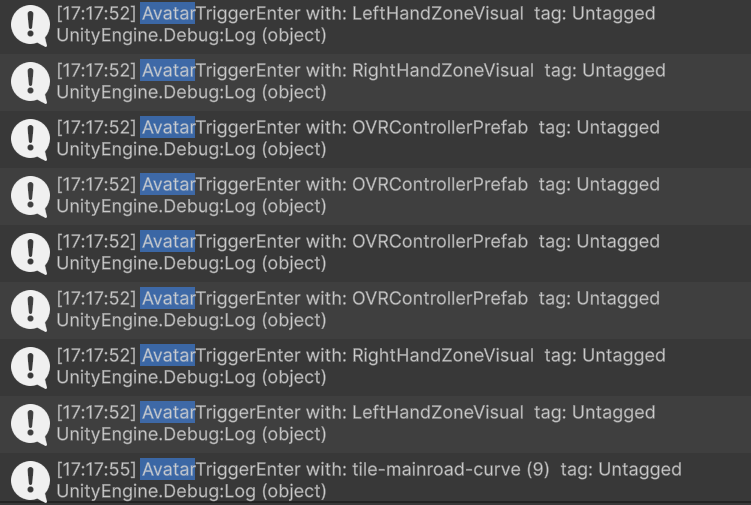
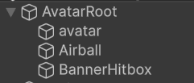
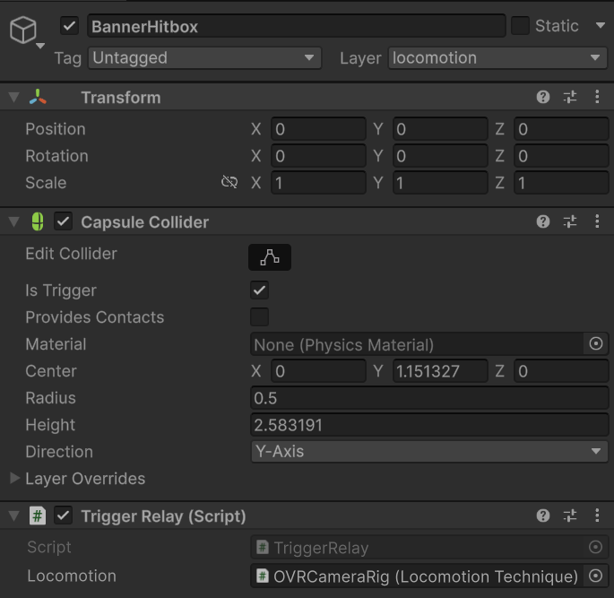

Jan First Half: Finishing up Locomotion
After all the work on left-hand and right-hand gestures, I realised something slightly embarrassing: the parkour course didn’t care at all about my AvatarRoot. It still thought the OVRCameraRig was the player.
So even though I could move around and do my airbending jumps, the game logic was like: “cool story bro, who are you?” No timer, no coin pickups, banners didn’t react, and those mini interaction tasks never started.
This week was basically me trying to make the level recognise my avatar again after i panicked when I realized this was happening in the first place. So I went back to the original game in the github and tried playing it, for some reason I never played it till now and hence why it took me so long to realize that nothing was recognizing me.
What the original project expected
First I tried to understand the original flow without changing anything.
There’s a script called ParkourCounter that reacts when the player hits stuff:
- banners → start / change stages
- coins → count them
- task triggers (tagged
objectInteractionTask) → show the UI and start the mini task
And inside my LocomotionTechnique there’s already a function for this:
AvatarTriggerEnter(Collider other)
In the original repo, the camera rig itself was moving and touching those colliders. So AvatarTriggerEnter() would get called naturally.
But in my setup:
- the thing that actually moves and collides is
AvatarRoot(capsule + rigidbody) - the
OVRCameraRigis basically a follower camera now - which means the rig never touches banners/coins/tasks
So the parkour logic didn’t “break”… it just never got triggered till now :(.
TriggerRelay: the tiny script that fixes everything
I didn’t want to rewrite the whole parkour system because it was already taking me a lot of time to figure out different things in the project and unity coding itself. I just wanted to forward collisions from my physical body to the script that already knows what to do. That looked more simpler even though its like a work-around.
So I added a small relay script on the moving collider (AvatarRoot / hitbox object):
public class TriggerRelay : MonoBehaviour
{
public LocomotionTechnique locomotion;
void OnTriggerEnter(Collider other)
{
if (locomotion) locomotion.AvatarTriggerEnter(other);
}
void OnCollisionEnter(Collision collision)
{
if (locomotion) locomotion.AvatarTriggerEnter(collision.collider);
}
}
And I also added a debug line inside AvatarTriggerEnter() so I could see what I’m hitting:
Debug.Log("AvatarTriggerEnter with: " + other.name + " tag: " + other.tag);
This was super useful because it told me: collisions are happening, but not with the things I care about.
At first my console spam looked like:
LeftHandZoneVisual- random floor tiles
- controller prefab stuff

But never:
StartBannerCoin_xxObjectInteractionInitiator...
That’s when I realised this wasn’t a “trigger relay” problem. This was a layers problem.
Layers: parkour sees me, ground doesn’t (and vice versa)
The parkour objects (banners/coins/tasks) live on a custom layer called locomotion.
The ground is on a different layer.
My AvatarRoot was on Default. So:
- it collided with the ground
- but based on the project’s physics collision matrix, it didn’t interact with the
locomotionlayer.
Then I tried the obvious thing: put AvatarRoot on the locomotion layer.
It worked… for 2 seconds. Banners started triggering, and then my avatar immediately fell through the ground because now it wasn’t colliding with the floor layer anymore.
So the situation was:
- Default layer → ground works, parkour ignores me
- Locomotion layer → parkour works, ground ignores me
Lovely.
Two bodies: one for physics, one for talking
The solution that finally made everything sane was: don’t force one collider to do two jobs.
So I split it:
1. AvatarRoot (main body)
- Layer:
Default - CapsuleCollider + Rigidbody
- Handles gravity, floor, walls, normal physics

2. BannerHitbox (new child under AvatarRoot)
- Layer:
locomotion - CapsuleCollider set to Is Trigger
- Has the
TriggerRelayscript

So:
AvatarRootkeeps behaving like a normal physical playerBannerHitboxjust follows along as a “sensor” that talks to banners/coins/tasks
Once I did this and hit Play, I finally saw the console print something satisfying:
AvatarTriggerEnter with: StartBanner tag: banner
And the scene actually responded:
- start banner disappears
- next banner appears
- coins spawn
- timer starts ticking
That moment felt way too good for something this basic 😭

Bonus: Unity froze on Play Mode
While doing all this trial-and-error, Unity randomly decided to freeze sometimes on:
Application.EnterPlaymode
Only fix was to kill Unity from Task Manager. Not fun at alllllll.
A friend told me a hack that helped a lot:
-
Edit → Project Settings → Editor
-
enable “Enter Play Mode Options”
-
disable:
- Reload Domain
- Reload Scene
After this, Play Mode became almost instant and the freeze stopped (for a bit).
I happily assumed: “Cool, that was the problem.”
Later I realised two things:
- This wasn’t the real fix, i am still to figure out why it happens.
- Those settings come with side effects: static variables and some states don’t reset properly between plays, which started to be problematic.
So in the end I switched those options back off and returned to the default behaviour.
Still, if your project is big and you know what you’re doing with static state, this trick can be worth it. Just don’t let it distract you from actually fixing your code like it did for me. xD
So where things stand now
Right now the full loop finally feels connected:
-
third-person avatar + camera works
-
left hand tilt gives predictable movement
-
right hand swirl gives clicky jumps
-
and the course actually reacts to my avatar again:
- banners trigger
- coins count
There’s still polish left , and also next week I will try to figure out the interaction task. I have not started that at all and it is kind of making me anxious. But lets see.
Cheers, – Ajay